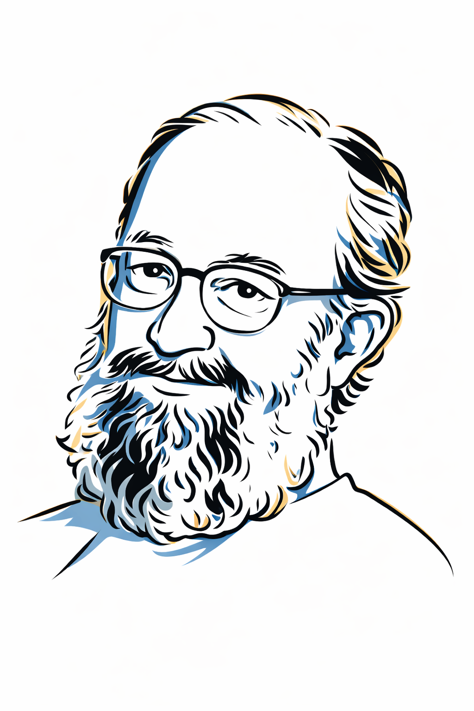

The deadline for nominating candidates for the Wagner Sessin Awards is June 26, 2026.
The Awards are for young researchers who have demonstrated a strong dedication to scientific or technological research and potential for leadership and have made notable contributions in one of the two selected areas: Orbital Mechanics and Control and Dynamical and Planetary Astronomy.
The scientific-technological contributions are characterized by articles published in indexed scientific journals, full articles published in arbitrated proceedings with strict selection criteria, theses defended, and notable technological contributions resulting from activities carried out mainly in Brazil.
The Awards will be presented at the opening session of CBDO 2024.
Please find detailed information at http://www.astro.iag.usp.br/~dinamica/premiows.htm